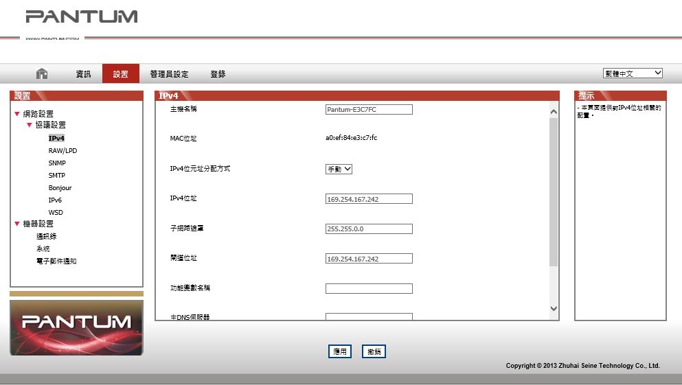

4. 有線網路設置（適用於有線網路列印功能機型）
您可能需要在印表機上設置某些網路參數，可以從內嵌的 Web 伺服器設置這些參數。
4.1. 設置 IP 位址
印表機 IP 位址可通過 DHCP 功能自動獲取，也可手動設置。
| 自動設置
印表機默認開啟 DHCP 自動設置功能。
1. 將印表機通過網路電纜連線到網路，並完成開機準備。
2. 印表機將自動獲得伺服器分配的 IP 地址。自動獲得的 IP 位址可能要過幾分鐘才能使用。
|
|
附註：
|
• 如果 DHCP 自動獲取 IP 位址不成功，印表機會自動採用默認的 IP 位址：169.254.xx.xx。
• 鑒於 DHCP 的特性，如果印表機長時間不使用或者更換網路接入點，網路自動分 配給印表機的 IP 位址可能會變化，導致無法連接印表機，建議啟用 DHCP 功能的 同時，將網路自動分配的 IP 位址與印表機 Mac 位址綁定。
|
| 手動設置
在 Web 流覽器的地址行中鍵入 IP 地址，以打開內嵌的 Web 伺服器。
1. 在巡覽列中點擊“設置”，打開設置頁面；；
2. 選擇“網路設置”-“IPV4 設置”；
3. 依次設置“IP 位元址分配方式（手動）”、“IP 位址”和“子網路遮罩”，其他項為選填；
4. 點擊“應用”，保存設置。
4.2. 安裝印表機到網路
在此設置中，本印表機直接連接到網路，並且可設置為允許網路上的所有電腦直接列印到本 產品。
1. 在打開印表機前，先將網路電纜接入印表機網路埠，以將印表機直接連接到網路。
2. 打開印表機，等待控制台上的狀態指示燈顯示為準備就緒狀態，如下圖所示。

3. 將印表機光碟插入電腦。如果軟體安裝程式未啟動，請流覽光碟上的“setup.exe”檔， 然後按兩下運行該檔。
4. 按照安裝程式說明進行操作。
5. 繼續安裝完成。
4.3. 設置網路產品
4.3.1. 查看或更改網路設置
您可以使用內嵌的 Web 伺服器查看或更改 IP 設置。
1. 長按控制台“取消 / 繼續”按鈕列印 DEMO 資訊頁，查看印表機的 IP 位址資訊。空閒狀態下， 長按控制台按鈕（如下圖），可以列印 DEMO 頁。
2. 在 Web 流覽器的位址欄中鍵入 IP 位址，訪問內嵌的 Web 伺服器。
3. 按一下設置選項卡以獲得網路資訊。可根據需要更改設置。

4.3.2. 設置或更改 WEB 伺服器登錄密碼
使用內嵌的 Web 伺服器，設置一個網路密碼或更改現有的密碼。
|
|
附註：
|
• 產品預設使用者名為“admin”，初始密碼“000000”。
|
1. 打開內嵌的 Web 伺服器，請先登錄。
2. 按一下“管理員設置”選項卡。
3. 在密碼框和確認密碼框中鍵入新密碼。
4. 在視窗底部，按一下“應用”按鈕以保存設置。
4.3.3. 恢復出廠設置
如果要重置產品的所有參數設置，可以進行恢復出廠設置操作，具體做法是：在產品關閉電源 的狀態下，按住“取消 / 繼續”按鈕，打開產品電源，10 秒後鬆開按鈕，待印表機進入就緒狀 態後完成重置。